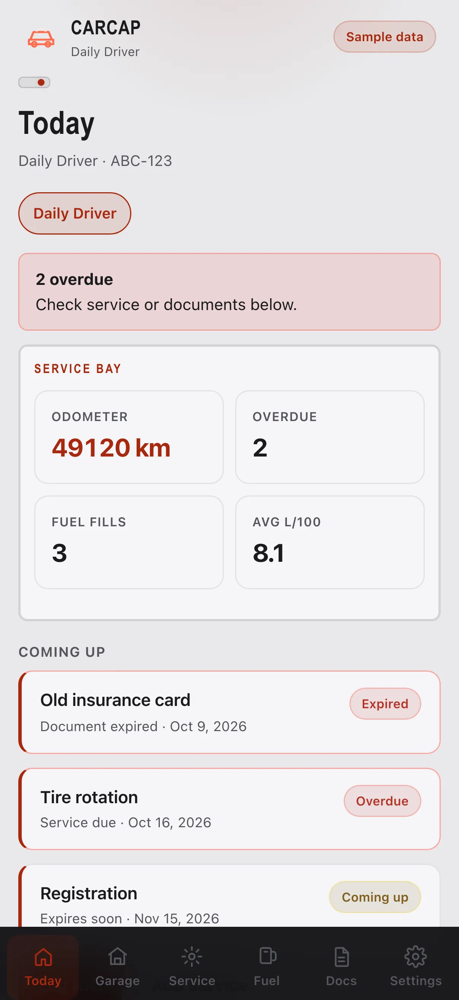

Illustrative story Illustrative story. People and data are fictional.
CarCap · Riyadh, Saudi Arabia
How Rashid keeps a tiny fleet documented
Rashid checks Today on phone, service on iPad at the yard, papers on laptop at the office.
“Three cars. Zero missing papers.”

Before and after
Made-up numbers for a fictional week — not a real customer case.
Before
After CarCap
A fictional day with Rashid
Sample screens for the story — not a recorded real session.
-
Yard Today
At the yard Rashid opens Today on his phone across three business cars — what moves today, what waits.
-
Service iPad
iPad service board on the bench keeps the tiny fleet honest; gaps show up before a customer does.
-
Office laptop
Office laptop holds papers — registration, insurance — so “where is the file?” stops being a weekly sport.
-
Fuel costs
Fuel rollup on the laptop is illustrative; he uses it to see patterns, not to micromanage drivers by the litre.
-
Phone close
Phone confirms tomorrow’s plan. Three cars. Zero missing papers in his head.
Watch it
A day across devices — silent walkthrough with captions. No autoplay with sound.
Read transcript
Rashid runs a three-car day across phone, iPad, laptop. Fictional.
Features Rashid uses
Illustrative story. People and data are fictional.